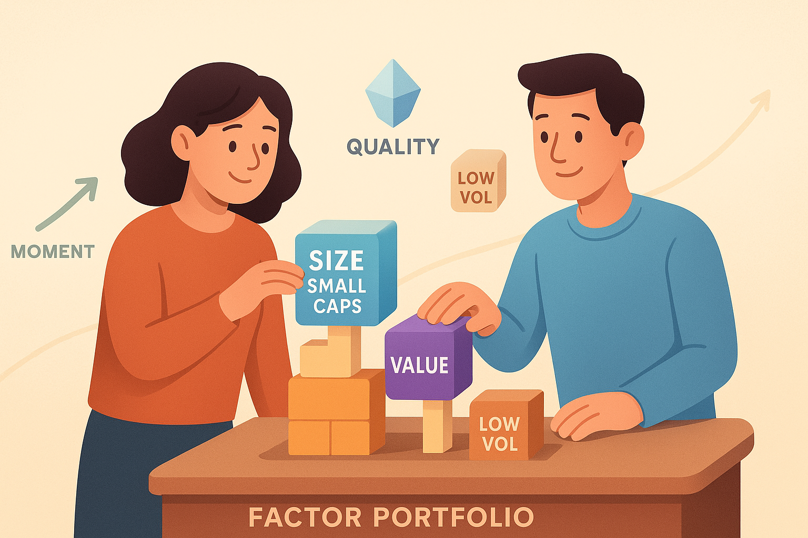

14 Schritt 3: Faktorstrategien ergänzen (für Fortgeschrittene)
Faktorstrategien klingen auf den ersten Blick so, als bräuchte man dafür ein Statistikstudium oder tiefes Expertenwissen. Das stimmt aber nicht. In diesem Kapitel lernst du, wie du als Privatanleger/-in einfache, wissenschaftlich fundierte Zusatzbausteine zu deinem Portfolio ergänzt – ohne Stress, ohne komplizierte Formeln und ohne dass es dein ganzes Depot auf den Kopf stellt.
Das Ziel ist nicht, dein Basis-Portfolio zu ersetzen. Sondern ihm auf Wunsch einen kleinen „Turbo“ zu geben, der langfristig Chancen auf etwas mehr Rendite bietet – und manchmal sogar das Risiko reduziert. Das Stichwort lautet:
Beimischung.
Nicht „Alles oder Nichts“, sondern „ein bisschen, aber gezielt“.
14.1 Warum Faktorstrategien überhaupt existieren
Um zu verstehen, warum es Faktorinvesting gibt, hilft eine kleine Zeitreise. Jahrzehntelang gingen viele Anleger davon aus, dass die Rendite einer Aktie hauptsächlich vom Markt selbst abhängt – also davon, ob die Wirtschaft wächst oder schrumpft. Doch Wissenschaftler stellten nach und nach fest: Es gibt Muster im Verhalten von Aktien, die sich immer wieder zeigen. Manche Gruppen von Aktien erzielten langfristig höhere Renditen oder geringere Schwankungen als der breite Markt.
Diese Muster nennt man Faktoren. Und viele davon sind auch heute noch in ETFs verpackt, die du ganz einfach kaufen kannst.
Kurz gesagt: Faktoren sind besondere Eigenschaften von Aktien, die statistisch gesehen einen Vorteil bringen können – über lange Zeiträume hinweg.

Beispiele für bekannte Faktoren:
👉 Value (günstig bewertete Unternehmen)
👉 Momentum (Aktien mit positivem Trend)
👉 Low Risk/Volatility (ruhigere, weniger schwankende Aktien)
👉 Quality (finanziell starke, solide Unternehmen)
👉 Size (Unternehmen mit geringer Marktkapitalisierung)
Wenn du Kapitel 8, 9 und 10 gelesen hast, kennst du bereits die Geschichten dahinter. Nun geht es darum, wie du diese Bausteine praktisch in dein Portfolio einbauen kannst.
14.2 Was Faktorstrategien leisten können – und was nicht
Bevor wir konkret werden, ist es wichtig, realistische Erwartungen zu haben. Faktoren sind kein Zaubertrick. Aber sie können:
✔ langfristig statistische Vorteile bringen: Manche Faktoren haben über Jahrzehnte hinweg besser abgeschnitten als der Markt.
✔ Portfolios stabiler machen: Faktoren wie Low Risk oder Quality können Schwankungen reduzieren.
✔ unterschiedliche Marktphasen abfedern: Wenn Value schwächelt, läuft vielleicht Momentum. Wenn Momentum stottert, punkten oft defensive Strategien.
✔ deine Renditequellen breiter aufstellen: Du bist nicht mehr nur „vom Markt“ abhängig.
Aber: Faktoren funktionieren nicht jedes Jahr. Manchmal laufen sie jahrelang hinterher. Deshalb gilt:
Faktoren sind ein Langstreckenlauf – kein Sprint.
14.3 Warum eine kleine Beimischung völlig ausreicht
Du musst nicht dein ganzes Depot umstellen, um vom Faktorsystem zu profitieren. Viele Profianleger kombinieren einen einfachen Welt-ETF mit einer moderaten Beimischung eines Faktors.
Ein typisches Einsteigerverhältnis wäre:
👉 90 % Basis-Portfolio
👉 10 % Faktor-ETF Ihrer Wahl
Warum das gut funktioniert:
👉 du behältst ein stabiles Fundament
👉 das risikoarme Design bleibt erhalten
👉 du hast dennoch einen messbaren Zusatzbaustein
👉 Schwankungen bleiben kontrollierbar
Genau dieser Ansatz ist ideal für junge Anleger, die erste Erfahrungen mit Faktorstrategien sammeln möchten.
14.4 Lisa und Samir entdecken Faktorstrategien
Lisa ist neugierig geworden. Sie hat ein solides Basis-Portfolio und möchte nun „ein bisschen optimieren“, ohne viel Komplexität einzubauen. Besonders spannend findet sie Momentum, weil sie im Sport oft erlebt hat, wie kleine Erfolgserlebnisse weitere Erfolge nach sich ziehen – und dieses Bild hilft ihr, die Strategie intuitiv zu verstehen.
Samir dagegen interessiert sich für Sicherheit. Nach seinen Erfahrungen mit schwankungsreichen Portfolios fühlt er sich besonders von Low Risk angesprochen. Er mag die Idee, Aktien zu halten, die sich weniger heftig bewegen als der Gesamtmarkt.
Beide haben völlig unterschiedliche Motivationen – und beide Wege sind richtig. Denn das Entscheidende ist nicht der „beste Faktor“, sondern der, den du wirklich durchhalten kannst.
14.5 Welcher Faktor passt zu dir? – Eine intuitive Entscheidungshilfe
Damit du herausfinden kannst, welcher Faktor bei dir Sinn ergibt, hier eine praktische Orientierung:
14.5.1 Momentum – Wenn du Trends magst
Du bist der Typ Mensch, der Dynamik und Bewegung spannend findet? Du magst das Gefühl, „mit dem Trend“ zu laufen?
Momentum passt, wenn du:
- langfristig investierst
- Trendverhalten nachvollziehen kannst
- kurzfristige Schwankungen akzeptierst
Passt zu:
✔ Lisa
✔ Anleger/-innen, die smarte, moderne Strategien mögen
14.5.2 Low Risk – Wenn du Stabilität willst
Du schätzt Ruhe im Portfolio und möchtest geringere Schwankungen?
Low Risk passt, wenn du:
- mit einem stabileren Depot besser schläfst
- weniger Stress mit Kursbewegungen willst
- auch mal schwächere Boomphasen akzeptierst
Passt zu:
✔ Samir
✔ Sicherheitsorientierte Anleger
14.5.3 Value – Wenn du „günstig kaufen“ logisch findest
Du liebst das Gefühl, ein Schnäppchen zu machen? Dann ist Value eine intuitive Wahl.
Value passt, wenn du:
- Geduld hast
- gerne sachlich denkst
- Zeiträume von 5–10 Jahren entspannt aussitzt
Passt zu:
✔ rationale Anleger/-innen
✔ Menschen, die langfristige Zyklen akzeptieren
14.5.4 Quality – Wenn du Qualität auch im Alltag wertschätzt
Du magst solide Unternehmen, die wirtschaftlich stark sind und zuverlässig Gewinne machen?
Quality passt, wenn du:
- Stabilität und Vernunft schätzt
- weniger Ausfälle möchtest
- risikoarme Performance bevorzugst
Passt zu:
✔ pragmatische Anleger/-innen
✔ Menschen, denen Sicherheit und Kontrolle wichtig sind
14.6 Warum du nur einen Faktor wählen solltest (zum Start)
Es gibt viele Strategien – aber Einsteiger sollten sich auf einen Faktor konzentrieren. Das hat mehrere Vorteile:
👉 weniger Komplexität
👉 klarere Erwartungshaltung
👉 leichteres Rebalancing
👉 bessere Disziplin in schwierigen Marktphasen
Natürlich kann man später mehrere Faktoren kombinieren. Aber gerade am Anfang ist „weniger“ wieder einmal „mehr“.
Nachdem du nun weißt, warum Faktoren existieren, welche es gibt und wie du intuitiv den passenden findest, geht es jetzt um die Praxis. Du lernst, wie man Faktorstrategien in das eigene Portfolio integriert, wie man passende ETFs auswählt und warum Rebalancing dabei eine wichtige Rolle spielt. Die folgenden Abschnitte sollen es dir ermöglichen, direkt danach ein eigenes, kleines Faktor-Setup aufzubauen – ohne Überforderung.
14.7 Wie du Faktor-ETFs auswählst – Schritt für Schritt
Die Auswahl eines Faktor-ETFs unterscheidet sich nicht stark von normalen ETFs, aber ein paar zusätzliche Punkte sind wichtig. Daher orientieren wir uns an einer klaren Struktur:
1. Verstehe die Strategie des ETFs
Auch wenn alle Momentum-ETFs „Momentum“ heißen – sie setzen die Strategie unterschiedlich um.
Achte auf:
👉 Indexanbieter (MSCI, S&P, FTSE usw.)
👉 Konzept (z. B. streng oder breit gefasst)
👉 Umschlagsfrequenz (wie oft Aktien ausgetauscht werden)
Beispiel: Ein Momentum-ETF von MSCI kann etwas anders zusammengesetzt sein als ein Momentum-ETF von S&P. Beide funktionieren, aber du solltest wissen, was du kaufst.
2. Europa- vs. Weltfokus
Es gibt Faktor-ETFs auf:
👉 die ganze Welt
👉 industrialisierte Länder
👉 einzelne Regionen (Europa, USA, Emerging Markets)
Für Einsteiger gilt meist: Breiter ist besser.
Ein globaler Faktor-ETF reduziert das Risiko, dass bestimmte Regionen lange schwächeln.
3. Kosten nicht überbewerten – aber kennen
Faktor-ETFs sind oft etwas teurer als Standard-ETFs, weil die Strategie komplexer ist. 0,25 %–0,45 % sind normal. Diese Kosten sind okay, solange die Strategie solide umgesetzt ist.
Achte aber darauf, nicht aufgrund „schöner Backtests“ einen teuren Exoten zu wählen.
4. Größe & Liquidität
Ein ETF sollte nicht zu klein sein. Als grobe Faustregel:
✔ ab 100 Mio. € Fondsvolumen
✔ solide Anbieter wie iShares, Xtrackers, Lyxor, Vanguard, SPDR, Amundi
Das sorgt für bessere Handelbarkeit und geringere Kosten im Kauf/Verkauf.
5. Track Record: Nicht entscheidend – aber hilfreich
Auch wenn vergangene Renditen keine Garantie sind, zeigt ein mehrjähriger Track Record:
👉 wie konsequent die Strategie umgesetzt wird
👉 wie stabil der ETF läuft
👉 ob er seine Benchmark sinnvoll abbildet
2–3 Jahre Daten reichen meist aus.
14.8 Wie viel Faktor ist sinnvoll? – Die optimale Beimischung
Hier kommt der wichtigste Punkt: Die Beimischung soll helfen – nicht dominieren.
Die Wissenschaft zeigt: Schon 5–15 % eines Faktors können langfristig einen Unterschied machen.
Daher gelten diese Richtwerte:
👉 5 % → sehr konservativ, aber spürbar
👉 10 % → idealer Einstieg für Einsteiger
👉 15–20 % → für Fortgeschrittene mit klarer Strategie
👉 >20 % → nur für sehr erfahrene Anleger
Für die meisten Privatanleger ist „10 % Faktor, 90 % Basis-Portfolio“ der perfekte Startpunkt.
14.9 Konkrete Beispiel-Portfolios
Hier kommen realistische Setups, die du direkt als Vorlage nutzen kannst. Sie sind einsteigerfreundlich, robust und wissenschaftlich fundiert.
Beispiel 1: „Momentum light“ – Der einfache Trendbaustein
- 90 % Welt-ETF
- 10 % Momentum-ETF
Vorteil: Du nutzt Momentum, ohne dein Risiko massiv zu erhöhen.
Beispiel 2: „Stabil & smart“ – Der Low-Risk-Fokus
- 80 % Welt-ETF
- 20 % Low-Risk-ETF
Vorteil: Weniger Schwankung, oft bessere Nerven.
Beispiel 3: „Rational & günstig“ – Value als Upgrade
- 85 % Welt-ETF
- 15 % Value-ETF
Vorteil: Langfristig solides Renditepotenzial, historisch oft robust in Krisen.
Beispiel 4: „Multi-Faktor für Mutige“
Nur geeignet, wenn du bereits Erfahrung hast.
- 70 % Welt-ETF
- 15 % Momentum
- 15 % Low Risk
Vorteil: Diversifikation innerhalb der Faktoren selbst.
14.10 Wie Lisa ihre Momentum-Beimischung plant

Lisa hat sich – wie im letzten Kapitel – für Momentum entschieden. Sie schwankt zwischen „Ich hätte gerne einen Vorteil“ und „Ich will nicht zu viel verändern“. Nach ein paar Recherchen entscheidet sie sich für:
👉 90 % Welt-ETF
👉 10 % MSCI World Momentum
Warum genau diese Mischung?
Sie sagt selbst:
„Ich möchte nichts übertreiben. Aber ich will spüren, dass ich es ernst meine.“
Ihre Motivation ist ein gutes Beispiel dafür, wie persönliche Präferenzen Faktorentscheidungen beeinflussen.
14.11 Wie Samir Low Risk ergänzt
Samir ist eher vorsichtig. Er findet die Idee beruhigend, dass Low-Risk-Strategien langfristig oft stabiler laufen. Nach einem Gespräch mit Lisa schaut er sich verschiedenste ETFs an und entscheidet am Ende:
👉 80 % Welt-ETF
👉 20 % Minimum Volatility ETF
Das gibt ihm Sicherheit und ein Gefühl der Kontrolle. Samir ist realistisch: Low Risk ist nicht immer vorne – aber er braucht keine stürmischen Phasen im Depot.
14.12 Rebalancing – das heimliche Herz des Faktorinvesting
Faktoren funktionieren über lange Zeiträume. Damit sie ihre Wirkung entfalten können, musst du sie nicht ständig beobachten – du musst nur regelmäßig rebalancen.
Rebalancing bedeutet: Du bringst dein Portfolio wieder in seine ursprünglichen Prozentanteile zurück.
Beispiel: Wenn dein 10%-Momentum-Baustein auf 13 % gestiegen ist, verkaufst du etwas oder kaufst den Rest nach, um wieder auf 10 % zu kommen.
14.12.1 Wie oft sollte man rebalancen?
Die beste Kombination aus Aufwand und Effekt ist:
✔ einmal pro Jahr
oder
✔ wenn ein Baustein 20–25 % von seiner Zielgewichtung abweicht
Das heißt:
👉 hat dein Momentum-Anteil 10 % als Ziel
👉 schwankt aber auf 12,5 % oder 7,5 %
→ dann korrigierst du ihn.
Rebalancing wirkt wie ein systematischer Mechanismus, der verhindert, dass Emotionen dein Depot steuern.
14.13 Typische Fehler beim Faktorinvesting
Viele Einsteiger stolpern über dieselben Fallstricke. Hier die wichtigsten:
❌ 1. Ständig den Faktor wechseln
Ein Jahr läuft Momentum schlecht – sofort wechseln Leute zu Value. Ein Fehler. Faktoren brauchen Zeit. Viel Zeit.
❌ 2. Zu große Gewichtung
Einsteiger sehen schöne Backtests und investieren plötzlich 40 % in Momentum. Das führt oft zu Stress oder Panik.
❌ 3. Zu viele Faktoren auf einmal
Wenn du vier oder fünf Faktor-ETFs besitzt, verwaltest du bald nur noch Chaos.
❌ 4. Fehlendes Rebalancing
Ohne Rebalancing entsteht ein Zufallsergebnis – kein Faktorportfolio.
❌ 5. Technik statt Logik
Einige Anleger wählen ETFs, die zwar cool klingen, aber niemand versteht.
Merke:
👉 Faktorinvesting ist kein Hightech – es ist Psychologie, Disziplin und Struktur.14.14 Die Grenzen von Faktorstrategien – warum sie nichts für Ungeduldige sind
Faktorstrategien sind faszinierend, weil sie scheinbar ein Versprechen enthalten:
„Wenn du konsequent bist, bekommst du langfristig eine bessere Rendite als der Markt.“
Das stimmt im Durchschnitt – aber nur im Durchschnitt. Und genau hier liegen die Stolperfallen.
In den Daten funktioniert alles wunderbar: 30 Jahre zurück, 50 Jahre zurück, 90 Jahre zurück. Überall sieht man Prämien, die sauber aus den Diagrammen lächeln und flüstern: „Investiere in mich, ich bin schlau.“
In der Realität fühlt sich das jedoch ganz anders an.
14.14.1 Der Faktor-Schmerz: Wenn dein kluges Portfolio sich dumm anfühlt
Die Wahrheit ist: Faktorstrategien verlangen emotionale Stabilität. Mehr als klassische Weltportfolios.
Warum? Weil sie über lange Zeiträume schlechter laufen können.
👉 Value kann 10 Jahre lang underperformen.
👉 Size war in den 2010ern quasi unsichtbar.
👉 Momentum bricht gelegentlich plötzlich ein.
👉 Low Volatility wirkt manchmal langweilig und teuer.Wenn du in dieser Phase dabeibleiben willst, musst du verstehen, warum der Faktor existiert – sonst fühlt er sich wie ein unnützes Anhängsel an, das dein Portfolio sabotiert.
Die Knackpunkte:
Faktoren müssen zyklisch sein, sonst würden sie nicht funktionieren. Wenn sie immer laufen würden, würde jeder sie kaufen, und die Prämie wäre weg.
Du wirst Rückschläge erleben. Faktorprämien sind kein Buffet. Sie kommen in Wellen, mal stark, mal schwach.
Eine faktorbasierte Underperformance kann extrem lange dauern. Wir sprechen nicht über Wochen oder Monate, sondern über Jahre – manchmal ein Jahrzehnt.
Lisa formulierte es im Gespräch mit Samir einmal so:
„Faktoren fühlen sich manchmal an wie die klugen Kinder im Unterricht, die aber einfach keine Lust haben, ihre Hausaufgaben zu machen.“
Samir lachte – aber im Kern stimmte es: Faktoren gehören zu den Strategien, die man trotzdem verfolgt, nicht wegen der kurzfristigen Motivation.
14.14.2 Der Faktor-Zoo: Zu viele Möglichkeiten, zu wenig Sinn
Ein weiterer Klassiker ist der sogenannte „Faktor-Zoo“.
Im akademischen Betrieb wurden über die Jahre Hunderte von Faktoren angeblich entdeckt – von „Net Operating Asset Growth“ bis „Maximum Daily Return“. Einige davon sind statistische Zufälle, andere wiederholen sich in verschiedenen Märkten nicht, und manche sind so nischig, dass sie praktisch nicht investierbar sind.
Für private Anleger gilt:
👉 Nur die großen, robusten Faktoren sind relevant.
- Value
- Size
- Momentum
- Low Volatility
- Quality / Profitability
Alles andere ist im besten Fall unwichtig, im schlimmsten Fall gefährlich.
Samir hatte einmal ironisch kommentiert:
„Wenn es einen Faktor für ‚Wochen mit Vollmond‘ gäbe und er zufällig in den letzten 20 Jahren funktioniert hätte – würdest du deshalb danach investieren?“
Lisa schüttelte nur lachend den Kopf.
Die Botschaft: Es geht nicht darum, möglichst viele Faktoren zu finden – sondern die wenigen richtigen.
14.14.3 Die drei Risiken, die du nicht ignorieren darfst
Faktorinvesting hat drei Arten von Risiken, die im klassischen Weltportfolio kaum vorkommen:
Tracking Error Risiko Dein Portfolio weicht deutlich vom Weltmarkt ab – manchmal positiv, manchmal negativ. Psychologisch ist das anspruchsvoll.
Timing Risiko Faktoren können lange Durststrecken haben. Wenn du im falschen Moment einsteigst, wird das unangenehm.
Implementierungsrisiko Viele Faktor-ETFs setzen komplizierte Regeln um. Manche sind gut, andere weniger gut.
Lisa und Samir testeten das durch Beispielrechnungen in ihrer Tabelle:
- Weltportfolio: glatterer Verlauf
- Small Caps: etwas holpriger
- Value: noch holpriger
- Momentum: teilweise starke Ausschläge
Trotzdem zeigte sich: Langfristig wurden die Ausschläge belohnt, aber nur, wenn man wirklich diszipliniert dabei blieb.
14.15 Ein sinnvolles, einfaches Faktor-Set für fortgeschrittene Anleger
Wenn du nach diesem Kapitel das Gefühl hast, dass Faktorstrategien klug sein können, aber du trotzdem nicht weißt, wie du beginnen sollst – dann ist das normal.
Deshalb hier ein Vorschlag, wie ein schlanker, sinnvoller Einstieg aussehen könnte.
Option A: Nur Small-Cap-World ergänzen → leicht, robust, historisch gut untersucht → oft bessere Rendite als der Markt
Option B: Small Caps + Value → zwei Faktoren mit guter, komplementärer Wirkung
Option C: Die Dreierkombination → Small Caps → Value → Quality
Das ist der „Sweet Spot“ vieler professioneller Portfolios: ausbalanciert, robust, divers, wissenschaftlich gut belegt.
Samir entschied sich später genau dafür. Lisa hingegen blieb zunächst bei Option A, weil sie keine zusätzliche Komplexität wollte.
Der gemeinsame Nenner:
„Faktorinvesting ist wie ein Werkzeugkasten. Du brauchst nicht 20 Werkzeuge. Drei gute reichen.“
14.16 Wie du ein Faktorportfolio baust – Schritt für Schritt
Ein einfacher Leitfaden, der dich von „Theorie verstehen“ zu „praktisch umsetzen“ bringt.
Schritt 1: Dein Basisportfolio steht (ohne Faktoren).
Du hast ein globales ETF-Portfolio, das sicher, breit gestreut und zu dir passend ist.
Schritt 2: Du wählst maximal zwei bis drei Faktoren.
Nicht mehr – sonst wird es unübersichtlich.
Schritt 3: Du definierst die Gewichte.
Typische Optionen:
- 90 % Welt / 10 % Faktor
- 80 % Welt / 20 % Faktoren
- 70 % Welt / 30 % Faktoren
Alles darüber hinaus ist möglich, aber eher für Profis.
Schritt 4: Du prüfst die ETF-Auswahl.
Nicht jeder ETF, der „Value“ sagt, ist wirklich Value. Nicht jeder „Quality“-ETF ist sauber konstruiert.
Du achtest auf:
👉 Indexanbieter (MSCI, FTSE, S&P – die üblichen Verdächtigen)
👉 Replikationsmethode
👉 Kosten
👉 Diversifikation
👉 Umschlagshäufigkeit
Schritt 5: Du setzt langsam um.
Samir machte es so:
- erst 5 %, dann 10 %, dann 15 %
- über viele Monate hinweg
- ohne Stress, ohne FOMO
Lisa entschied sich für eine noch sanftere Variante: Sie startete mit 5 % Small Caps und beließ es dort vorerst.
Schritt 6: Du bleibst konsequent – besonders in den schlechten Phasen.
Denn genau dort entsteht langfristig die Prämie.
14.17 Welche Anleger sollten Faktorstrategien nutzen – und welche lieber nicht?
Faktorstrategien passen zu dir, wenn …
👉 du langfristig investierst (mindestens 10–15 Jahre)
👉 du Schwankungen tolerieren kannst
👉 du Interesse an Finanzthemen hast
👉 du bereit bist, eine Zeit lang schlechter als der Markt auszusehen
👉 du dein Portfolio aktiv überprüfst und verstehen möchtest, warum es so funktioniertFaktorstrategien passen NICHT zu dir, wenn …
👉 du ungeduldig bist
👉 du Rendite ständig mit Freunden vergleichst (schlechte Idee!)
👉 du nervös wirst, wenn du mal hinter dem MSCI World liegst
👉 du dein Portfolio gern möglichst simpel hältst
👉 du eigentlich schon mit dem Basisportfolio zufrieden bistDie wichtigste Botschaft dieses Kapitels:
Faktorstrategien sind ein Werkzeug – kein Muss und kein Ersatz für solide Grundlagen.
14.18 Was du aus diesem Kapitel mitnehmen solltest
👉 Faktoren sind langfristige Renditetreiber, die wissenschaftlich gut belegt sind.
👉 Die wichtigsten Faktoren heißen: Value, Size, Momentum, Low Volatility und Quality.
👉 Du solltest nie mehr als zwei bis drei Faktoren gleichzeitig einsetzen.
👉 Faktorprämien kommen und gehen – lange Durststrecken gehören dazu.
👉 Wer Faktoren nutzt, braucht Disziplin, Ruhe und ein klares System.
👉 Ein einfaches Faktorportfolio könnte zum Beispiel „Welt + Small Caps + Value“ sein.
👉 Faktorstrategien eignen sich nur für Anleger, die langfristig investieren und Schwankungen akzeptieren können.14.19 Zum Nachdenken
👉 Wie würdest du dich fühlen, wenn dein faktorergänztes Portfolio drei Jahre lang schlechter als der Markt läuft – würdest du trotzdem weitermachen?
👉 Welche zwei Faktoren sprechen dich am meisten an – und warum?
👉 Wäre es für dich emotional leichter, einfach beim Weltportfolio zu bleiben?
👉 Wenn du einen Faktor „weglassen müsstest“ – welcher wäre es?
👉 Woran würdest du erkennen, dass du für Faktorstrategien bereit bist?14.20 Ausblick
Im nächsten Kapitel gehen wir einen entscheidenden Schritt weiter: Wir beschäftigen uns damit, wie du dein gesamtes Portfolio als System verstehst – nicht nur als Sammlung von Bausteinen. Dabei sprechen wir über:
👉 Rebalancing
👉 Liquiditätsrollen
👉 Sicherheitsmechanismen
👉 den psychologischen Teil der Portfoliokonstruktion
👉 und darüber, wie du dein Portfolio so planst, dass es zu deinem Leben passt – nicht umgekehrt.
Faktorstrategien waren der erste Ausflug in ein fortgeschrittenes Themengebiet. Jetzt bist du bereit für den nächsten Schritt.